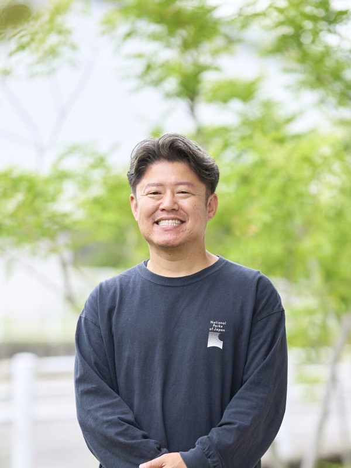
福祉で創る子供たちの未来と挑戦
久安 宏一hisayasu koichi
有限会社ストロベリー 代表取締役
中学卒業後、現場仕事などで経験を積み20歳で母親と共に起業しヘルパーステーションを設立。他施設で4年間の修業を経て24歳で家業に戻り、その後放課後等デイサービスへ事業転換。30歳で事業を急拡大させ、現在は岡山市平井学区を中心に複数事業所を展開。
企業サイトを見るCHAPTER 01
子どもたちの未来を支える事業への転換
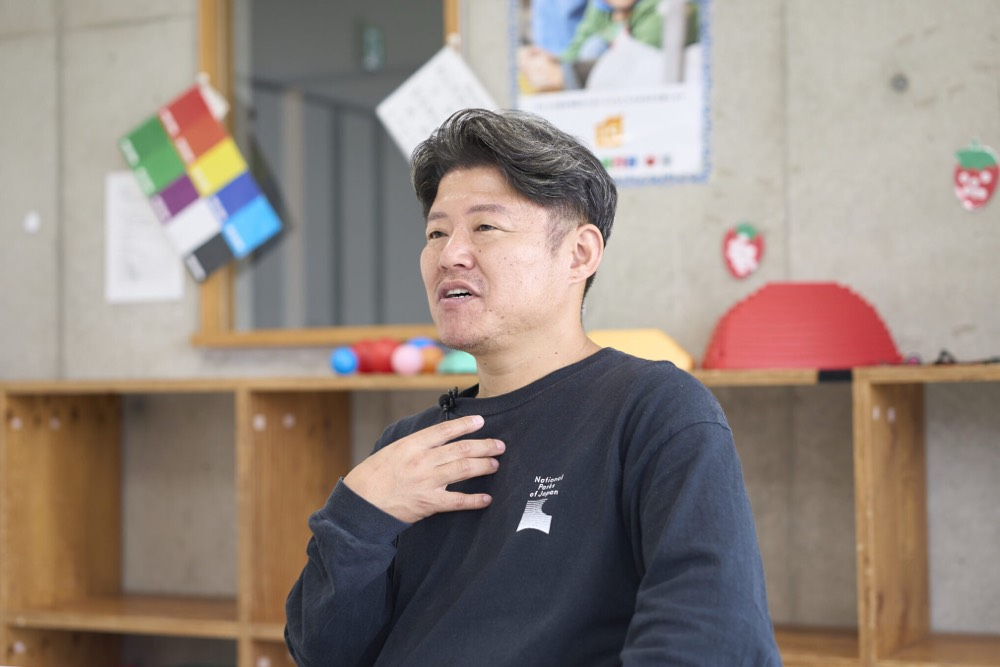
Qどのような経緯で現在の事業を始められたのでしょうか?
A私は中学を卒業した後、ずっと職人として現場仕事などで働いていました。様々なアルバイトも経験しながら資金を貯め、自分に何かできることはないかと模索していたのです。その中で「福祉の分野で何かやってみよう」と思い立ち、私が20歳の時に母親と一緒に現在の会社の原点となる事業を立ち上げました。当初は現在のような子ども向けの事業ではなく、高齢者の方々を対象としたヘルパーステーションとしてスタートしました。立ち上げ当初は右も左も分からず、ご縁のあった同業の方から業務のノウハウを教えていただき、手探りの中で必死に言われたことをこなす毎日でした。
Qそこからなぜ、現在の子供を対象とした事業へと転換されたのですか?
A高齢者向けのヘルパーとして活動する中で重度の障害を持つ子供たちのケアに携わる機会がありました。その子供たちと深く関わり日々の生活をサポートしていくうちに、「この子たちの未来はどうなるのだろう」「将来に向けてもっと長期的に寄り添い、考えてあげられる仕事がしたい」という強い思いが私の中に芽生えてきたのです。これから先の長い人生を生きていく子供たちの成長を直接支援し、彼らの可能性を広げるお手伝いをしたいと考えるようになりました。そこで思い切って子供をメインとした事業、現在の放課後等デイサービスや児童発達支援へと事業を大きく転換していくことを決断しました。
CHAPTER 02
修業時代を経ての帰還と、スタッフのためのドミナント展開
Q他社での修業も経験されたと伺いましたがその時のエピソードを教えてください。
A母親と事業を立ち上げてから少し経った頃、私自身のスキルアップと福祉業界をより深く学ぶために、別の施設へ勤めに出ることにしました。いわゆる「修業」のような形です。そこで約4年間、現場の最前線でしっかりと経験を積み、専門的な知識や組織の運営方法などを貪欲に学びました。そして私が24歳になったタイミングで再び自分の会社に戻り、本格的に経営と現場の両面に携わるようになりました。この4年間の外での経験が、現在の事業の基礎を創り上げる大きな自信と財産になったと確信しています。現在では、母親から実質的に代表を引き継ぎ、私が陣頭指揮を執っています。
Qその後、30歳で一気に事業を拡大された理由は何でしょうか?
A私が30歳になった頃に実家のある平井学区の向かいで運営していた施設が、ありがたいことに多くの子供たちに利用していただき、非常に手狭になってきました。また私の中には「スタッフの給与水準をさらに引き上げ、安心して長く働ける環境を作りたい」という経営者としての強い思いがありました。そのためには、会社の規模感を絶対に大きくする必要があると考えたのです。私たちはあえて同じ「平井学区」という限られた地域内でドミナント展開を進め、現在ではこの地域だけで6つの事業所を運営しています。それぞれの事業所で「アトリエ」や「しぜん」「おしごと」など明確にコンセプトを変えることで、子供たちが自分の個性や興味に合わせて居場所を「選べる環境」を作りたかったのです。
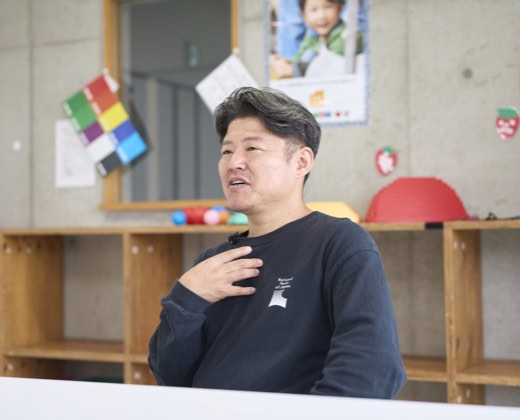
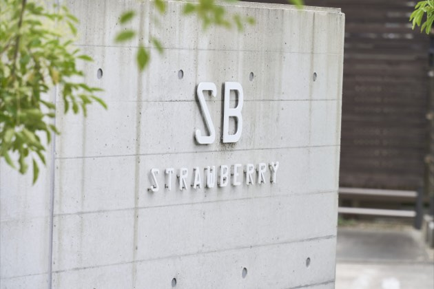
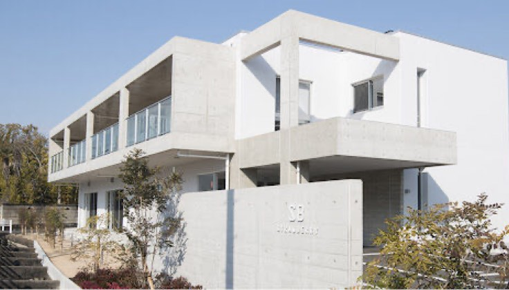
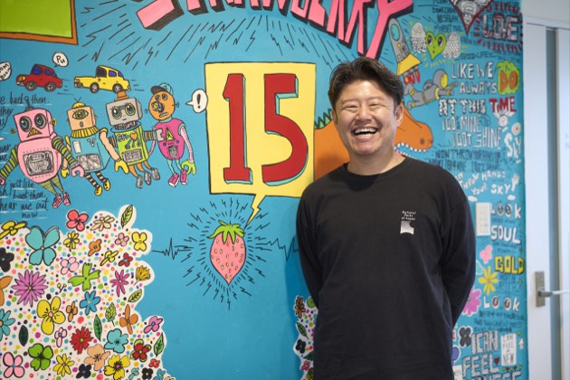
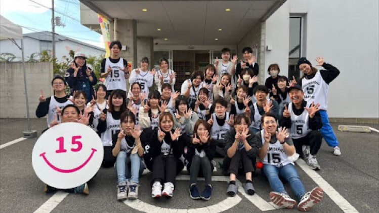
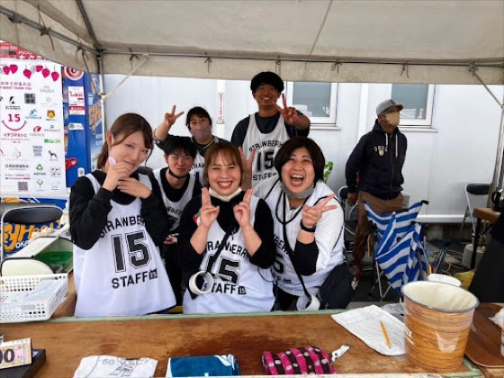
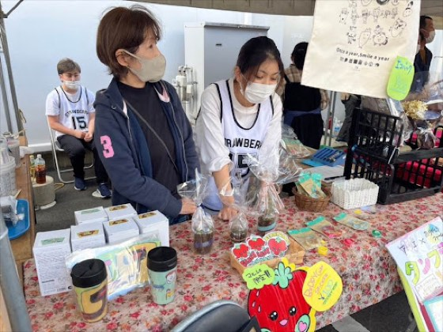
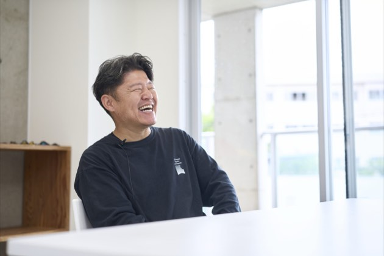
CHAPTER 03
選べる環境と主体性を育む理念、そして次なるエリアへの挑戦
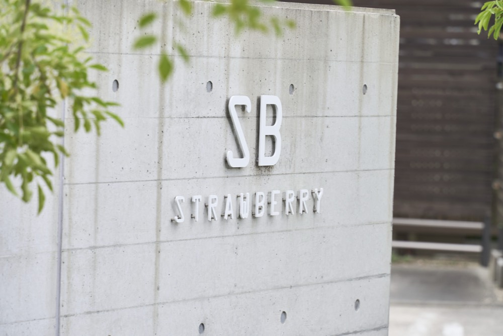
Q貴社の事業の特徴や、地域における強みはどこにありますか?
A当社の対象年齢は3歳から18歳までと幅広く、主に特別支援学校や小学校の支援学級に通う子供たちが放課後等デイサービスを利用しています。私たちの最大の強みは、地域に深く根差し、圧倒的な選択肢を提供できる点です。そして、何より大切にしている企業理念が「未来の君が主人公」という言葉です。これは子供たちだけでなく、働くスタッフに対しても向けたメッセージです。スタッフには、ただ言われた業務をこなすのではなく、主体的に自分の人生を歩んでほしいと願っています。自分のやりたいことやアイデアを事業に反映できるような会社でありたいですし、規模を拡大しているのも、そうした挑戦ができるフィールドを増やすためでもあります。また、私の右腕となる幹部には、慎重なタイプとビジョン型の人間がおり、どんどん前に進もうとする私をしっかりと支えてくれる強固なチームワークも大きな強みです。
Q今後の展望や長期的な目標についてお聞かせください。
Aまずは事業エリアの拡大です。これまで集中して展開してきた平井学区を飛び出し、新たに中区と北区という別のエリアに初めて2店舗をオープンする予定です。私たちの理念や支援の形を、より多くの地域の子供たちに届けていきたいと考えています。また、地域へのアピールとして、平井学区の電柱に「いちご通り」という広告を多数展開し、地域の皆様に親しまれる存在を目指すユニークな取り組みも続けています。経営的な目標としては、現在約2億2000万円の売上を将来的には10億円の規模にまで成長させたいと本気で考えています。事業の拡大を通じて子供たちにはより豊かな経験の場をスタッフには夢を実現できるステージを提供し地域福祉の向上に全力で貢献していく覚悟です。